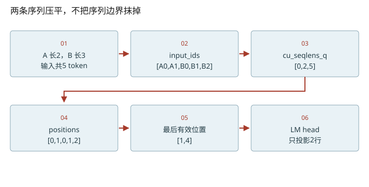
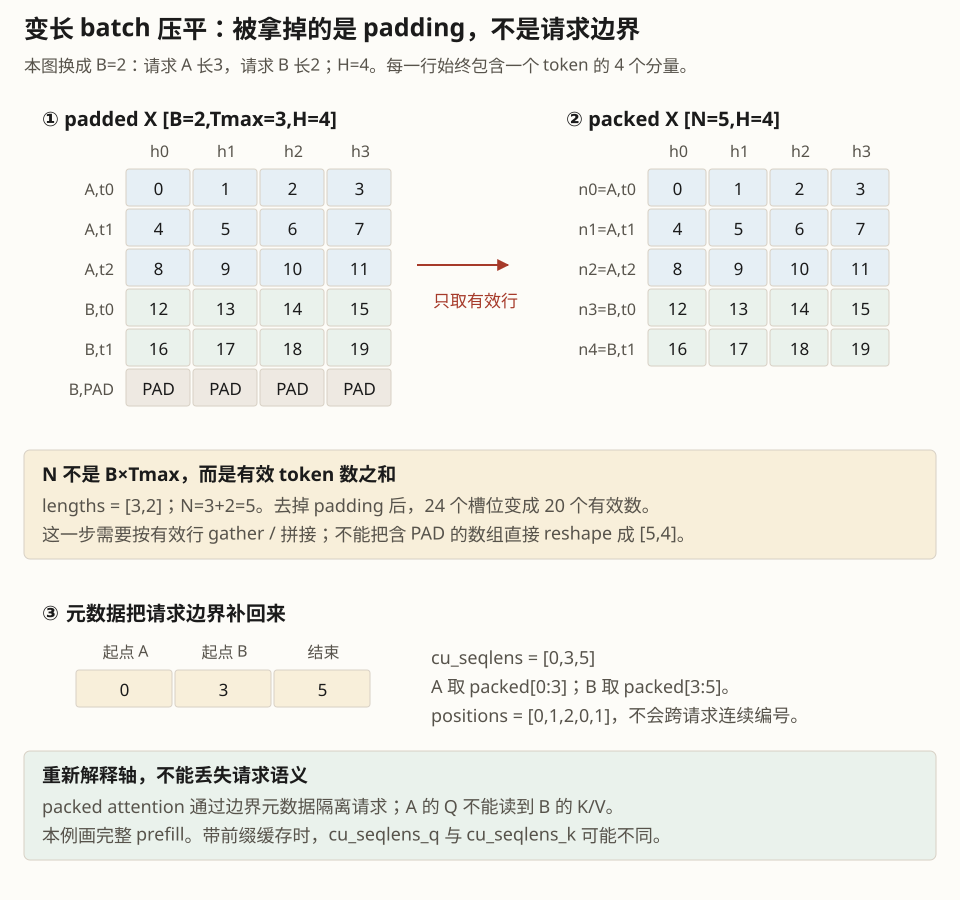
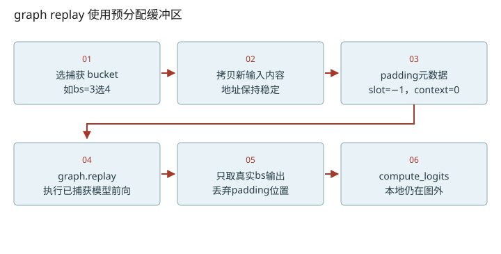

深入篇 26 / nano-vllm 源码追踪 · 2026-11-08
Runner 是翻译层：变长 batch、静态地址与 CUDA Graph
从两条变长请求构造输入元数据，并说清 graph replay 固定什么、允许什么变化。
从两条变长请求构造输入元数据，并说清 graph replay 固定什么、允许什么变化。

模型只看到张量，runner补齐请求语义
调度器用Sequence描述请求，模型需要input_ids、positions和attention元数据。prepare_prefill将每条请求的未缓存切片拼起来，同时构建query/key前缀和。A有2个新token、B有3个新token时，query前缀和是[0,2,5]；若A原有4个cached token，key前缀和变成[0,6,9]，query仍然[0,2,5]。这时历史KV必须通过block_tables找到。
为什么 graph 不能每轮换一套 tensor
捕获的执行依赖稳定的内存地址和支持的形状；本地capture_cudagraph先分配input_ids/positions/slot_mapping/context_lens/block_tables/outputs缓冲区，并按一组batch size捕获。replay前用拷贝改缓冲内容，不是用新的张量替换它们。逻辑请求组成可变，但要选能容纳它的捕获bucket，并正确处理padding。
本地graph_bs=[1,2,4,8]再加16的倍数。3条decode请求会用4的图，真实输出只取前3行。padding行的slot_mapping设−1，写KV的kernel直接跳过；context_lens为0避免把残留内容当有效历史。batch size大于512、prefill或enforce_eager时走eager路径。这是本地版本选择，不能推广为“prefill永远不能capture”。
把模型执行与采样边界分清
capture捕获的是self.model，不包含后面的compute_logits与sampler。capture输出缓冲保存hidden states，run_model再取真实行算logits。CUDA Graph减少主机逐kernel启动开销；它不自动把数学计算量变少，也不是把model权重编译成更小的参数。torch.compile可以优化/融合算子，二者职责不同且可以组合。
可做的小贡献从观察量开始
练习可以先在课程实验或独立分支增加指标：真实bs、bucket bs、padding比例、eager/replay次数。拿输入bs=3、4、5做对照，避免直接改vendor基准。要证明优化有效，计时需warmup与同步、同一输入负载，且把首轮编译/捕获时间单独记录。
把维度变化拆到每一步
- N是本轮有效token总数，不能一律写成B×Tmax。
- nano prefill直接用[N,Hq,d]，没有教学版的head-first转置。


数值练习：先算，再核对
推导A已有4个缓存token、本轮2个新token，B无缓存且本轮3个token时的cu_seqlens_q/k。再写出3条decode请求选4桶时有哪些metadata必须清掉。
闭卷检索
不要回看正文。答错后先解释原因，再重新打开这一课。
把结论落到源码
- 将prepare_prefill和ParallelLMHead里的cu_seqlens联系起来，追踪它的生产和消费。
- 核对graph.replay前所有fill_/zero_/slice复制的语句，解释遗漏清理会读到什么旧状态。
以下行号由本地 vendor 文件生成；上游链接固定完整 commit，离线摘录可直接打开。
- nano-prefill-inputs：nanovllm/engine/model_runner.py L129–170 · 上游证据
- nano-embedding：nanovllm/layers/embed_head.py L9–66 · 上游证据
- nano-graph-capture：nanovllm/engine/model_runner.py L223–257 · 上游证据
- nano-graph-replay：nanovllm/engine/model_runner.py L196–220 · 上游证据
优先阅读：本地 capture_cudagraph 与 run_model。
速查：形状与公式 · 三框架映射 · 术语表 · 复习与实战路线 · 4070 Ti本地实验
只在当前浏览器保存自评；不会自动写成已掌握的 learning record。